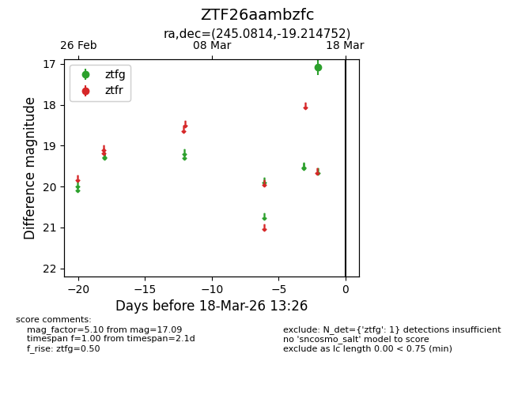
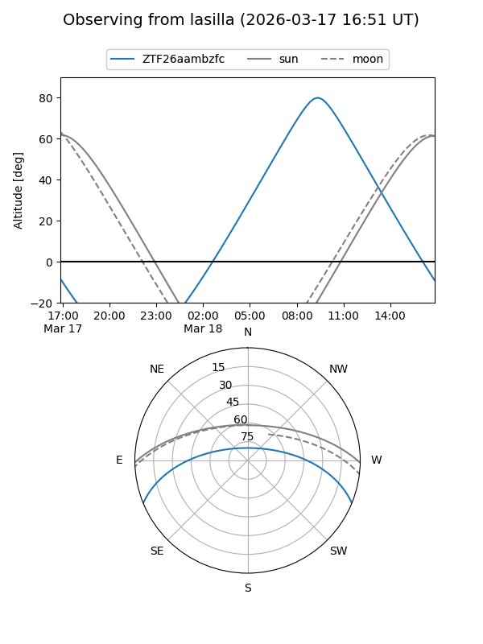
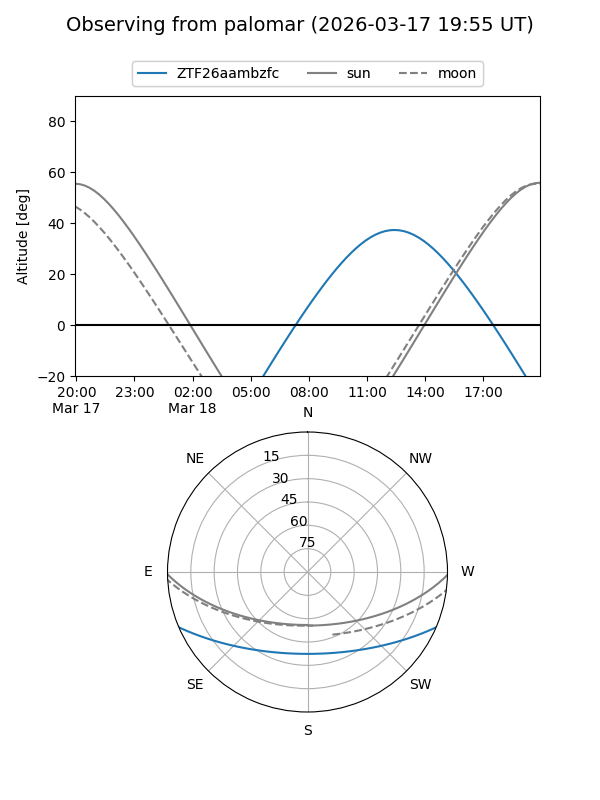

ZTF26aambzfc
Target ZTF26aambzfc at 2026-03-18 13:28
Aliases and brokers:
FINK: link
Lasair: link
ALeRCE: link
alt names
ZTF26aambzfc (ztf,fink_ztf)
Coordinates:
equatorial (ra, dec) = 245.0814,-19.21475
equatorial (HMS+DMS) = 16:20:19.54,-19:12:53.11
galactic (l, b) = (356.2141,+21.39337)
Flags:
Photometry:
last ztfg=17.09
1 ztfg detections
Lightcurve

Visibility


Additional plots